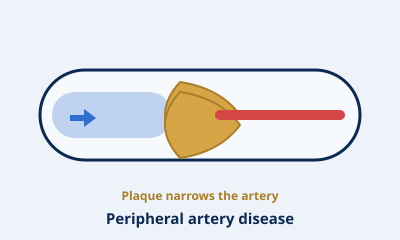
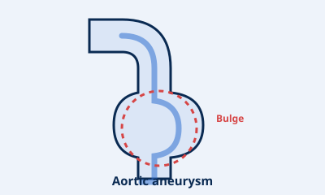
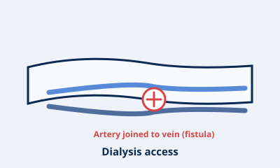

Varicose & Spider Veins
Modern, minimally invasive treatments including sclerotherapy and endovenous laser therapy.
Vascular & Vein Specialist · Richmond, Melbourne
Led by vascular and vein surgeon Dr Joy Wong, the Victorian Vascular and Vein Institute offers thorough diagnosis, clear explanations, and a treatment plan shaped around you.

Conditions treated
From everyday vein concerns to complex arterial disease. The diagrams below illustrate each condition — they're for guidance, not a diagnosis.
Modern, minimally invasive treatments including sclerotherapy and endovenous laser therapy.

Diagnosis and treatment of narrowed arteries to restore healthy circulation and mobility.

Screening, monitoring and surgical repair of abdominal and thoracic aortic aneurysms.

Assessment and intervention to reduce stroke risk from narrowed carotid arteries.

Rapid evaluation and management of blood clots to prevent serious complications.

Creation and maintenance of vascular access for patients requiring dialysis.
Your surgeon
Vascular & Vein Surgeon
“Every patient deserves to understand what's happening and why — before we talk about treatment.”
Dr Joy Wong is a vascular and endovascular surgeon and Director of the Victorian Vascular and Vein Institute in Richmond, which she founded in 2015. She cares for the full range of vascular and vein conditions, from varicose and spider veins through to complex arterial disease.
Fellowship-trained at the Royal Melbourne Hospital, with experience across leading Australian hospitals and the NHS in the UK, her approach is unhurried and thorough: she listens first, explains each condition clearly, and tailors a plan to your needs and goals.
Call to book with Dr WongOur approach
We believe good vascular care starts with understanding. You'll get the time to ask questions, a plain-English explanation of your condition, and options that range from lifestyle measures to advanced treatment.
A thorough consultation to understand your symptoms, history and concerns.
Vascular assessment and imaging to reach a clear, accurate diagnosis.
A personalised plan, favouring minimally invasive options where suitable.
Follow-up and coordination with your GP so your care stays joined-up.
Get in touch
To book with Dr Wong, please call the clinic during opening hours. A referral from your GP is helpful where you have one.
Call to book
(03) 9429 5955 Call the clinic
Victorian Vascular and Vein Institute
158 Lennox Street, Richmond VIC 3121